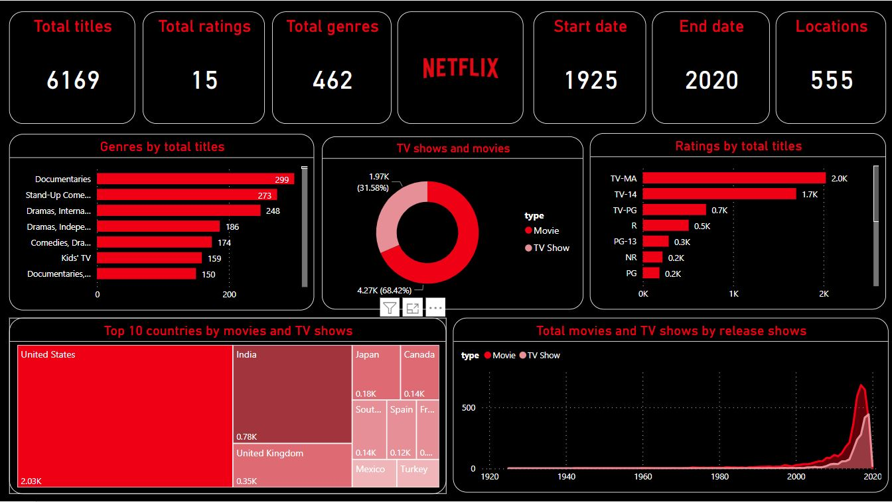
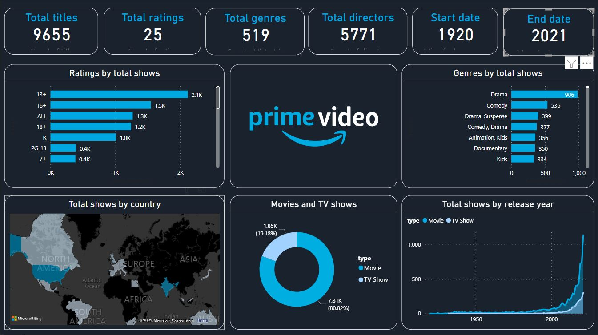
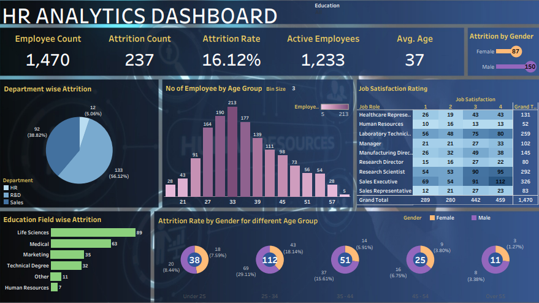
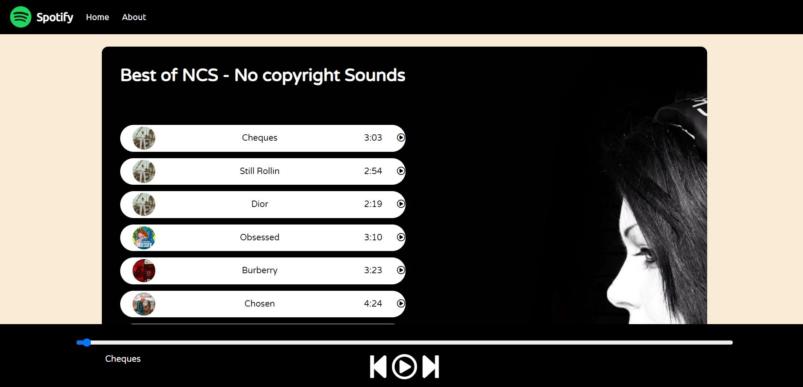

Created a dashboard in Tableau leveraging the data from Excel sheet.
The dashboard displays the movies and tv shows released by each country on a world map.
Also display the top ten genre numbers, as well as the ratings in different categories.
The graph also tells us the number of movies and tv shows that has been released.
Project2:- Amazon Prime Dashboard

Used Power BI to create an engaging dashboard on the data from Prime Videos
which displays top 10 countries that released shows across the world, percentage amongst movies and shows,
graph depicting the number of releases that happened in a particular year and the number of shows in the top genre.
Project3:- HR Dashboard

Leveraged the excel data of an organization to create a well organized dashboard.
The dashboard displays the various classification of data depending on education field,
attrition rate among genders in different age groups, job satisfaction rating as per different job roles,
department wise attrition and number of employees by age group.
Project4:- Spotify Clone

Created a replica of the music streaming giant - Spotify.
The backend includes a playlist of 10 songs and their cover photo.
Front end was coded using HTML5, CSS and JavaScript.
It supported various song playing functionalities such as play, pause, forward, backward,
random selection and playing all songs in the playlist.